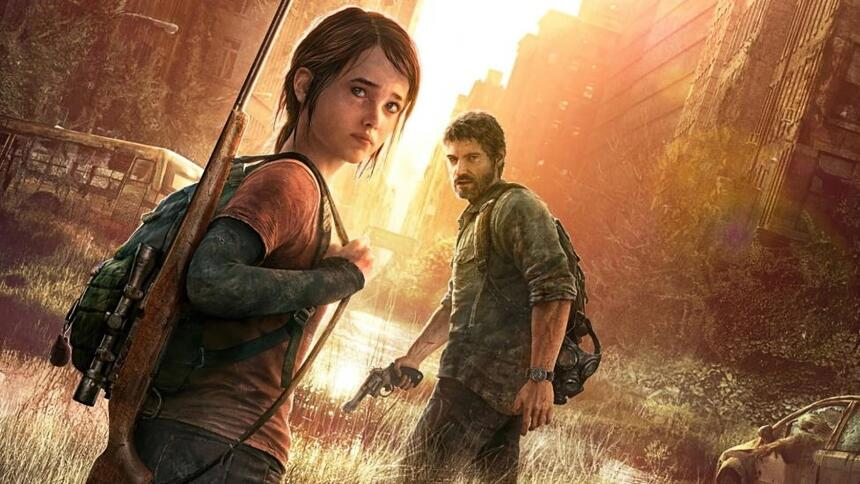
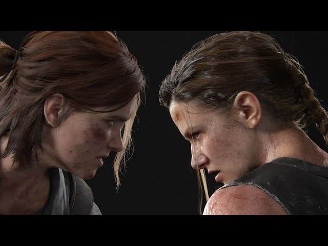

Echo zemsty - The Last of Us
Joel Miller
Joel Miller to postać pełna sprzeczności — na początku gry The Last of Us widzimy go jako ojca samotnie wychowującego córkę, a potem jako twardego przemytnika w post-apokaliptycznym świecie. Jego dramat sięga głęboko — strata córki, lata walki o przetrwanie i brutalna rzeczywistość zmieniają go w człowieka, który czasem wybiera moralnie wątpliwe drogi, by chronić tych, na których mu zależy. Jednak to właśnie w relacji z Ellie Williams odzywa się jego ludzka strona — zaczyna działać podobnie jak ojciec-zastępca, choć jednocześnie jego decyzje (takie jak kluczowe wydarzenia końca pierwszej części) wyrzucają go na granicę bohatera i antybohatera.
Ellie Williams
Ellie Williams to postać, która od młodości zmuszona była dorastać szybciej niż rówieśnicy — w świecie pełnym zagrożeń i utraty. W pierwszej części staje się nadzieją świata zainfekowanego — ze względu na swoją odporność — a w drugiej części historii jej motywacją staje się żądza zemsty po traumatycznych wydarzeniach. Choć jest niezwykle twarda, nie brakuje w niej wrażliwości i wewnętrznej walki — staje przed pytaniem, ile jest warta cena, którą się płaci za zemstę i czy poprzez nią można naprawdę odzyskać siebie.
Abby Anderson
Abby Anderson wkracza na scenę w drugiej części gry jako postać, która na początku jawi się wręcz jako antagonistka Jednak jej historia nie ogranicza się do agresji — gra odsłania jej wewnętrzne konflikty, relacje z innymi i momenty, w których staje się więcej niż tylko instrumentem zemsty. Abby pokazuje, że w świecie, w którym przetrwanie wymaga ciągłej walki, człowieczeństwo może być równie istotne jak siła mięśni.
| The Last of Us Part 1 & 2 | |||
|---|---|---|---|
| Tytuł | Producent | Platformy | Postacie |
| The Last od Us Part 1 | Naughty Dog | PlayStation 3, PlayStation 4, PlayStation 5, PC | Joel Miller, Ellie Williams |
| The Last of Us Part 2 | Naughty Dog | PlayStation 4, PlayStation 5, PC | Ellie Williams, Abby Anderson |
Stadia zarażonych
- Runners - Biegacze
- Stalkers - Czychacze
- Clickers - Klikacze
- Bloaters - Purchlaki
- Shamblers - Człapacze
- Rat King - Król Szczurów